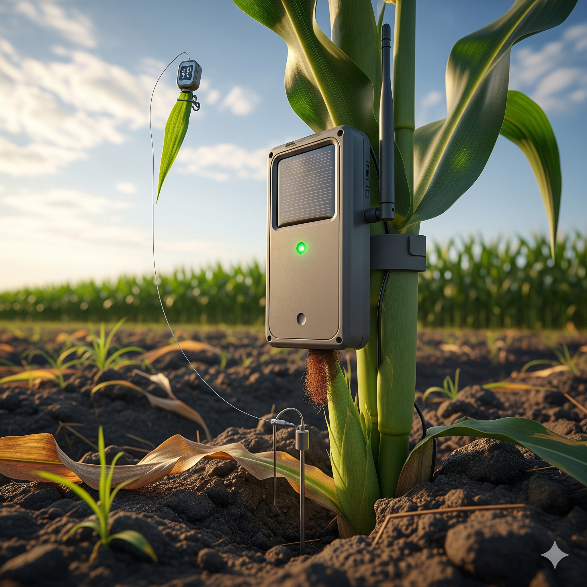
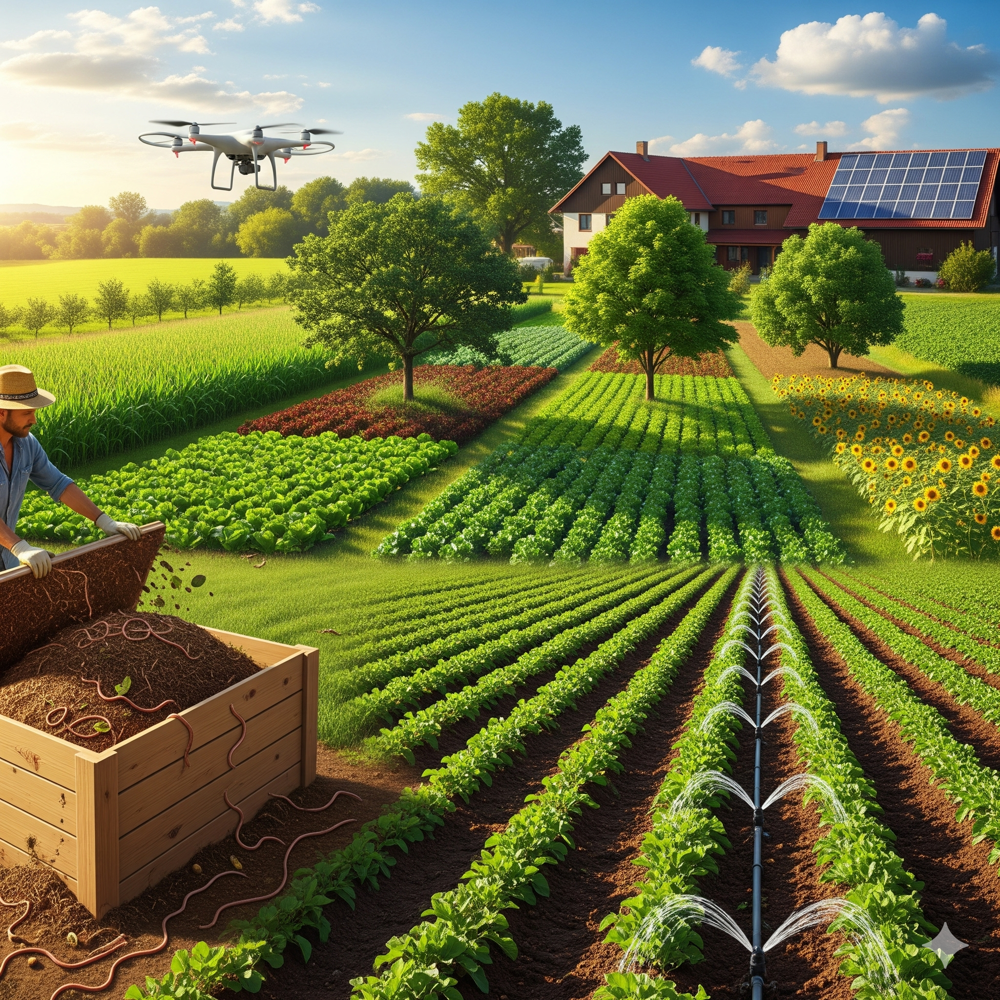
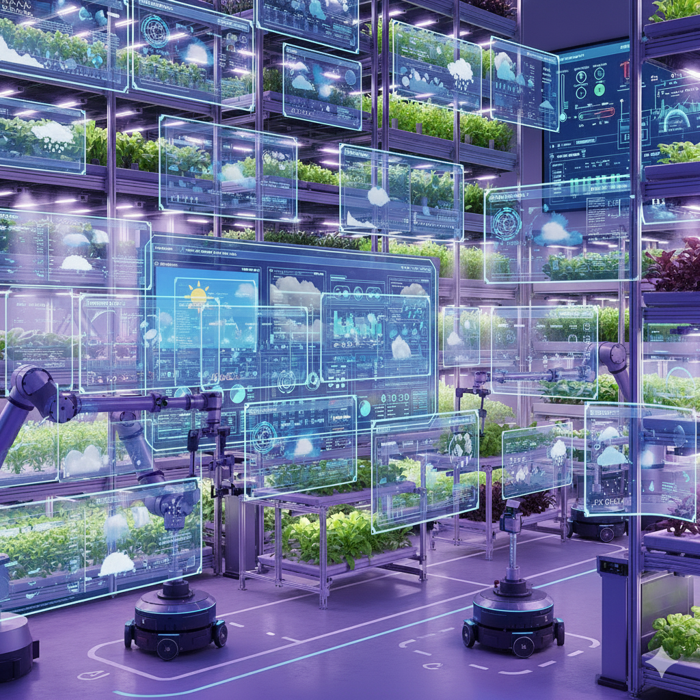
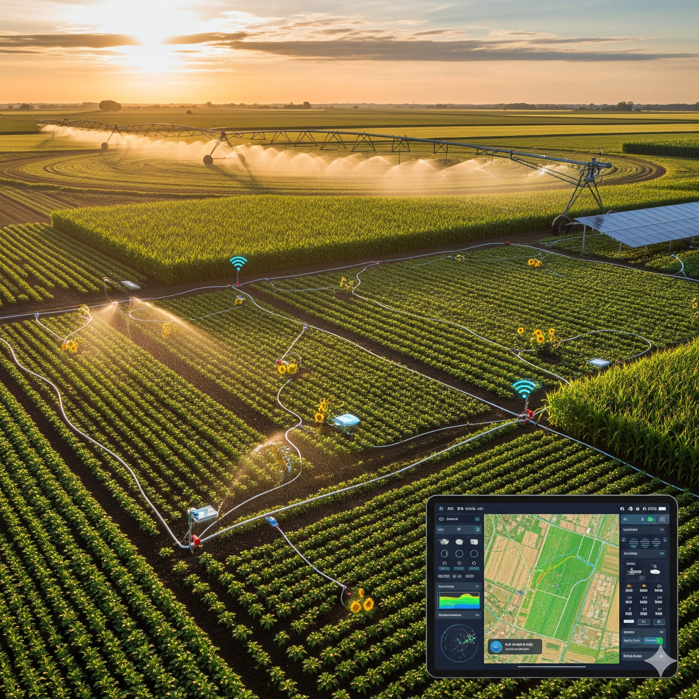

SmartCrop
|| Smarter Farming, Better Yields ||
Smart Technology for Smart Farming
Revolutionizing agriculture with cutting-edge IoT sensors, AI-powered insights, and data-driven solutions to maximize crop yield and minimize resource consumption.
Image Detection
Upload a plant leaf image to detect diseases and get instant treatment recommendations.
“With image detection, users can easily find out if their crops have diseases or pests just by taking a picture. This smart technology helps them protect crops on time and increase their harvest.”

New Approaches for Farming Technology
Discover innovative solutions that are transforming modern agriculture through technology integration and data-driven decision making.
IoT Sensors
Real-time monitoring of soil moisture, temperature, and crop health using advanced sensor networks.

AI Analytics
Machine learning algorithms predict crop yields, detect diseases, and optimize farming practices.
Mobile Integration
Farmer-friendly mobile apps for remote monitoring and control of farming operations.
.png)
Sustainable Practices
Eco-friendly solutions that reduce water usage, minimize chemical inputs, and protect soil health.

Climate-smart Agriculture (CSA)
Data-based weather forecasting and crop planning. Using low-emission fertilizers and renewable energy to reduce carbon footprint.

Smart Irrigation Systems
AI and IoT based drip irrigation that automatically controls water supply based on weather and soil conditions.
